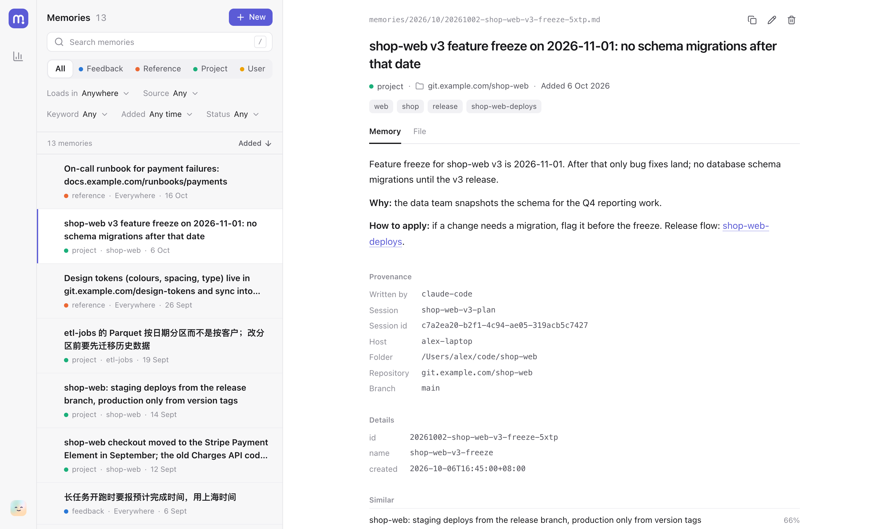
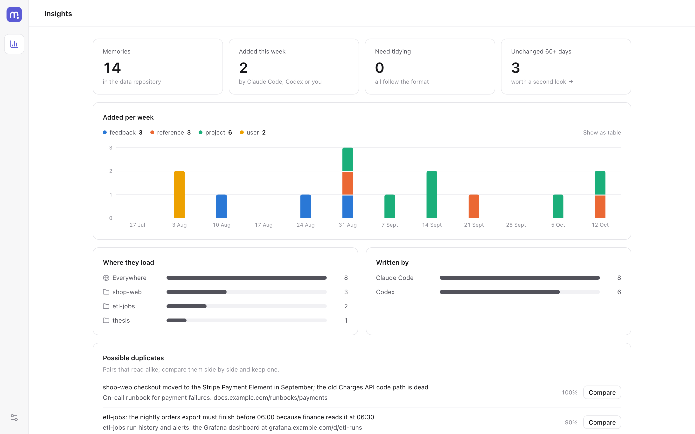

One memory for Claude Code and Codex
agent-memory keeps what your agents learn as plain Markdown files in a git repository you own. Each session starts with what matters where it runs; each turn ends with a commit.
uv tool install "agent-memory-git[ui]"
Two hooks and a folder of Markdown
mem install wires the same hooks into both tools. Nothing runs in the background, and git does the syncing.
Session start
A hook works out where the session runs and injects an index of the memories that apply: everything global, plus what was learned in this folder or repository.
While you work
The agent saves what is worth keeping as one Markdown file per memory, following the rules in PROTOCOL.md: who you are, how you want work done, facts about a project, where to find things.
Turn end
A hook stamps each new memory with where it came from and commits it, then pushes if there is a remote. The next session, in either tool and on any machine that pulls, sees it.
- ask-before-push.md
- shop-web-v3-freeze.md
- payments-runbook.md
- reply-language.md
a1f3c9e memory: +1 ~0 -0 (codex: on-call)
7b20d4a memory: +1 ~0 -0 (claude-code: plan)
mem uiPlain files, clear rules, nothing to run
Shared by both tools
A preference you gave Codex is there the next time Claude Code starts, and the other way round. Each tool's own memory is turned off, so there is one source.
Files you can read
Each memory is a Markdown file with a short frontmatter. Grep it, edit it, review it in a pull request; its history is plain git log.
Loads what matters here
Global memories load everywhere. Project memories load only in the folder or repository they came from, and in its other clones and worktrees.
Where each one came from
Tool, session, model, host, folder, repository, branch and commit are recorded by the hooks, never written by the agent.
Git all the way
Memories live in a git repository you own, and every change is a commit you can review or revert. Push to a private remote to sync machines, or keep it all on one. See an example.
Local by default
No service and no account. Search by meaning uses a small embedding model on your CPU; the network is only git and an optional update check.
A page to keep it tidy
Run mem ui to search, read and edit memories in a local page. Every change is a git commit, with Undo.
- Search by words and by meaning, across Chinese and English.
- Filter by type, place, source, keyword, date and status.
- Insights: changes week by week, near-duplicates side by side, and the index a session would get.
- Settings for keywords, sync, the local model and one-click updates.

Set up in a few minutes
You need Python 3.11 or newer, git and uv. Every step that edits your tools' settings shows a diff first.
Codex asks you to trust new hooks once: open /hooks in Codex and enable the three agent-memory hooks. The docs list every file mem install changes, and mem uninstall puts them back.
uv tool install "agent-memory-git[ui]"
mem init ~/repos/agent-memory-data # your data repository
mem import claude --dry-run # optional: existing memories
mem install --dry-run # every change, as a diff
mem installOr look around first, with nothing installed:
uvx --from "agent-memory-git[ui]" mem ui --demo